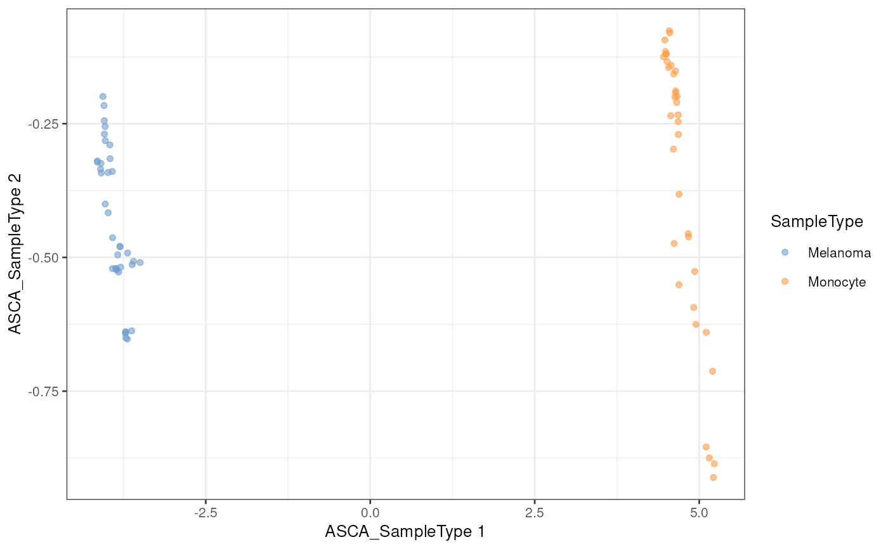
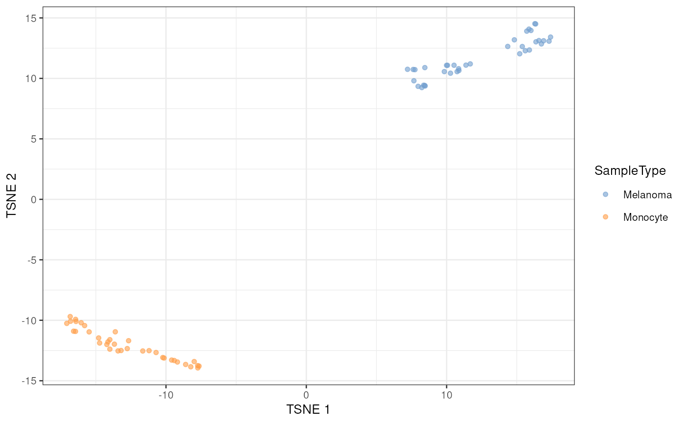

The function will add the component results computed
by scpComponentAnalysis() to a SingleCellExperiment's
reducedDims slot, to all using the many scater functions,
such as scater::plotReducedDim(), scater::plotTSNE(), ...
Arguments
- sce
An instance of class SingleCellExperiment.
- x
A
ListofDataFramescontaining principal components. This list is typically thebySampleelement produced byscpComponentAnalysis().
Examples
library("scater")
#> Loading required package: SingleCellExperiment
#> Loading required package: scuttle
data("leduc_minimal")
pcs <- scpComponentAnalysis(
leduc_minimal, method = "ASCA",
effects = "SampleType")$bySample
reducedDims(leduc_minimal)
#> List of length 0
#> names(0):
leduc_minimal <- addReducedDims(leduc_minimal, pcs)
reducedDims(leduc_minimal)
#> List of length 3
#> names(3): unmodelled residuals ASCA_SampleType
plotReducedDim(leduc_minimal, dimred = "ASCA_SampleType",
colour_by = "SampleType")

leduc_minimal <- runTSNE(leduc_minimal, dimred = "ASCA_SampleType")
plotTSNE(leduc_minimal, colour_by = "SampleType")
